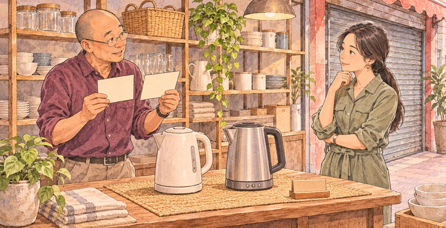

MKT-14 · 香港 · 10–15 分钟 · 参考价格框架 · 价值定位 · 顾客期望
同一个售价，两种比法

业界背景
香港消费者委员会在 2026 年 9 月 14 日指出，促销方式和包装大小未必能反映哪个选择最划算，建议同时查看历史价格与单位价格。
本案的虚构家居用品店使用有记录支持的价格，也清楚披露产品差异。要问的是哪种如实比较更配合定位，而不是怎样替虚构的折扣找理由。消委会的超市研究不是关于这两款电热水壶或其买家的证据。
课堂决策
一家虚构的香港家居用品店计划以 HK$300 推广 Everyday 电热水壶。不论采用哪种广告信息，水壶、结账价、存货、服务、退货条款及 1 年商业保修都不变，广告成本也相同。店方想以可靠、价钱合理的日用品建立口碑，不是把平价货扮成奢侈品。
A 的主打广告语是：“Everyday 电热水壶现售 HK$300，本店平日售 HK$400，现省 HK$100。”完整交易记录证明 HK$400 是这款水壶在合理期间内确实采用的平日售价，不是临时抬高一天的参考价，也不是厂方建议售价。促销日期及条款清楚列明。
B 的主打广告语是：“按需要选功能：Everyday HK$300；Premium HK$500。”Premium 是另一款在同一店铺确实有售的水壶，现价有记录支持。两款都能烧水，但不是同一产品。旁边以同等显眼的方式列出下表的功能及保修差异。两版完整广告都通过题设的真确性检查，没有宣称整体品质或使用寿命相同，也没有以 Premium 的售价声称减价。这是课堂假设，并非对实际广告的法律豁免。
两款均符合适用的安全要求，容量同为 1.5 升，均可自动关机。Everyday 只能烧水，有 1 年商业保修；Premium 多了温度选择及保温功能，有 3 年商业保修。保修期不影响法定权利，也不是实测的使用寿命。本题没有耐用程度的比较，也还没有销售或偏好测试证明哪种广告信息更有效。
| 已核实的虚构产品比较 | Everyday | Premium |
|---|
| 现价 | HK$300 | HK$500 |
| 容量／自动关机 | 1.5 升／有 | 1.5 升／有 |
| 功能 | 只可烧水 | 烧水、温度选择、保温 |
| 商业保修 | 1 年 | 3 年 |
| 使用寿命的比较证据 | 没有 | 没有 |
你的决定你会用 A，主打相对平日售价的实际节省，还是用 B，与高阶款作范围清楚的比较？在产品和 HK$300 售价不变的前提下，你希望目标顾客留意什么价值？
第 2 轮 · 补充资料
店方以便利抽样招募 4 名成年顾客作探索性访谈。每人都看两版完整广告及产品资料，但没有控制先后次序。对 A 的反应例如：“省 HK$100 会吸引我留意”和“我想知道日后还会不会有这个价”。对 B，有人说：“我只是烧水，未必用得到额外设定”；另一人则说：“放在一起看，我就想知道价格更低的那款会不会一样耐用”。这是个别反应，不是具代表性的客群比例、实际购买决定或广告版面的因果测试。
产品团队确认所列容量、自动关机、功能及保修差异。没有比较故障率或使用寿命的研究，不能因容量相同或价格有差距，就回答最后一位顾客的疑问。尚无证据显示 Premium 更耐用，也没有证据显示 Everyday 一样耐用。店方可调整已披露差异的用词或显眼程度，但不得声称品质相等或隐藏 Premium 的附加功能。两种价格基准仍有记录支持，没有发现虚假原价或违反安全要求。
你的决定你会维持原有比较方式，还是改选？提出一个如实的标题或澄清句，解释它照顾哪项顾客需要，但别把访谈当作提高销量或耐用程度相同的证明。
先讲清楚与什么相比
A 将同一款产品与它真正的平日售价比较：HK$400 − HK$300 = HK$100，即 HK$400 的 25%。B 比较两个不同型号：按现价，Premium 贵 HK$200。这个差价不是 Everyday 减价 HK$200；Everyday 自己的平日售价仍是 HK$400。差额较大，并不代表可以把两种减价说法互换。
限期优惠与功能取舍
A 让本身想买普通水壶的人更容易留意限期优惠，也可能令他们更加在意平日售价或下一次的促销价。B 让顾客将所需功能与高价款作比较。两款有共同的基本用途，所以可以作这种有限比较；不能因此断定一样耐用或整体品质相同。这些是合理解读，不是该店测得的效果。
无论用哪种说法，都要有证据
A 可改为：“只需烧水？Everyday 现售 HK$300，比本店实际平日售价 HK$400 便宜 HK$100。”保留清楚的促销条款及产品资料。B 可改为：“只烧水，还是想选温度？Everyday HK$300；Premium HK$500。”1 年对 3 年的商业保修和其他差异仍要显眼。若有人问哪款耐用，应坦白说没有使用寿命的比较证据。不要说“同等品质，价钱更低”。
先定顾客对象，再查他们怎样理解
若重点是让只需要基本功能的顾客看懂真实优惠，可以选 A；若希望协助顾客判断额外温度设定和保修期是否切合需要，可以选 B。没有证据证明哪案令销量最高。日后可先问顾客认为两个价格在比较什么、记得哪些差异、以及有否推断耐用程度。若要衡量购买，应保持产品及价格相同，采用可信的对照设计，事前定好结果指标。让 4 人看两版广告，不能量出转化提升。
教师提示
请学生分辨原价减幅、跨型号差价和对品质的主观推断。一开始把如实披露固定，让讨论集中在产品定位，而不是更正明显虚假的折扣。访谈只提示值得回答的疑问，不证明广告整体构成法律上的误导，也不代表大部分顾客看法相同。实务上，发布前须审视整体呈现和本地要求。本题可作的决定，是选一个透明的定位，并订下范围清楚的下一步验证；不要虚构销售胜方、寿命保证、法律意见，或声称高价必然高品质。
第二轮
店方以便利抽样招募 4 名成年顾客作探索性访谈。每人都看两版完整广告及产品资料，但没有控制先后次序。对 A 的反应例如：“省 HK$100 会吸引我留意”和“我想知道日后还会不会有这个价”。对 B，有人说：“我只是烧水，未必用得到额外设定”；另一人则说：“放在一起看，我就想知道价格更低的那款会不会一样耐用”。这是个别反应，不是具代表性的客群比例、实际购买决定或广告版面的因果测试。
产品团队确认所列容量、自动关机、功能及保修差异。没有比较故障率或使用寿命的研究，不能因容量相同或价格有差距，就回答最后一位顾客的疑问。尚无证据显示 Premium 更耐用，也没有证据显示 Everyday 一样耐用。店方可调整已披露差异的用词或显眼程度，但不得声称品质相等或隐藏 Premium 的附加功能。两种价格基准仍有记录支持，没有发现虚假原价或违反安全要求。
你的决定你会维持原有比较方式，还是改选？提出一个如实的标题或澄清句，解释它照顾哪项顾客需要，但别把访谈当作提高销量或耐用程度相同的证明。